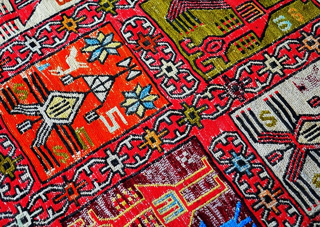
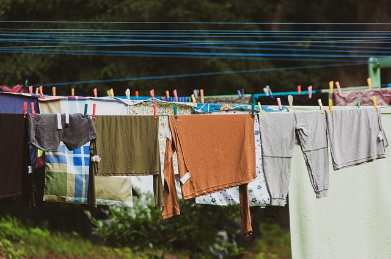

Lalezar Halı & Koltuk YıkamaKepez · AntalyaServis: alma & teslim
Halının hikâyesi yeniden başlar.
Evden alırız, yıkar, kurutur, getiririz. Ölçüsünü yazın, fiyatı okuyun, gününü seçin, yolculuğunu izleyin.
Fiyatı hesapla
01
Ölçü, fiyat
Halıları tek tek ekleyin; koltuk takımı ve yatak seçenekleri aynı sayfada.
“Halı eve dönünce odanın havası değişiyor.”
Örnek söz · gerçek müşteri yorumu değildir
Örnek söz · gerçek müşteri yorumu değildir
02
Servis günü
Size uyan gün ve saat aralığını seçin. Dolu aralıklar çizilidir.
03
Halım nerede?
Takip koduyla her aşama okunur: alındı, yıkanıyor, kuruyor, yolda.
04
Atölyeden kareler


